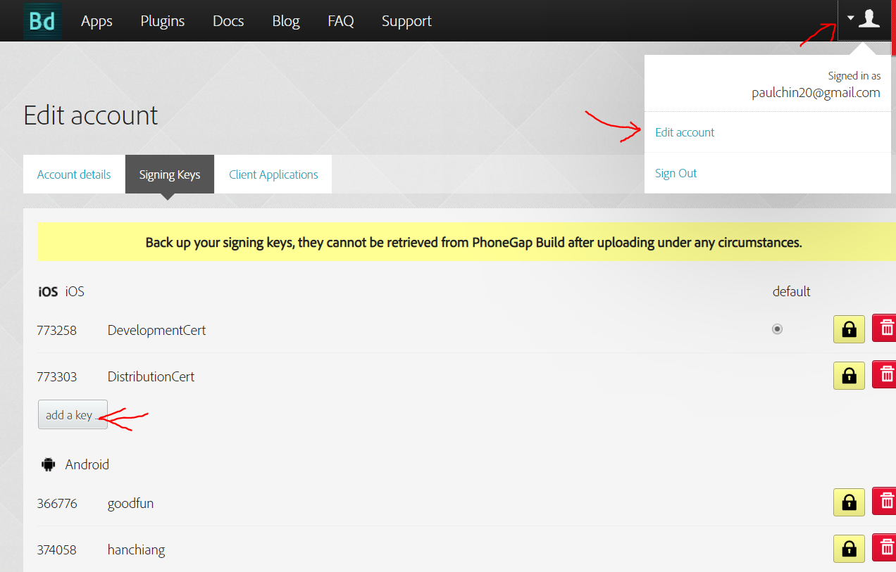
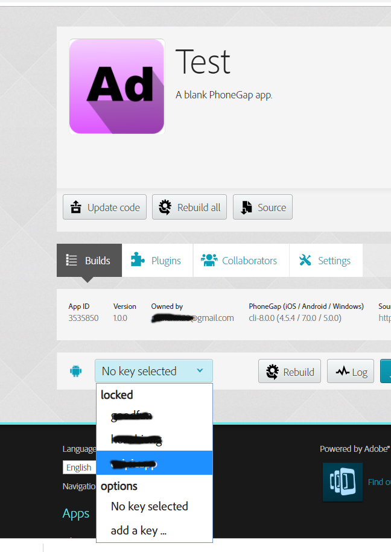

In this chapter we will learn how to create a release built for our apk. This involves creating a keystore signing key, uploading it to phonegap build and rebuilding your apk.
In order to be able to sign your apk’s, you will need to first generate a signing keystore. The tool used to generate a keystore is called keytool, and it comes with java. Therefore, in this section, we will learn how to install Java.
Java JDK comes from Oracle. So using google, search for ‘Download Java’. Once you find the download link, follow the link and then download the latest version of Java. After installing, you will need to set the path environment variable to your java bin folder. On my machine, the path to java bin folder is as shown in Fig 10-1 below.
On my Windows 10 machine the path is as follows:
C:\Program Files (x86)\Java\jre1.8.0_201\bin
It may be different for you. You need to check and copy your own machine’s path. After copying the path, we will append this to the path environment variable. First, go to System Properties and click on the button ‘Environment Variables…’ as shown in Fig 10-2 below.
This will take you to the next screen as shown in Fig 10-3 below.

From Fig 10-3 above, you can see a list of System variables in the bottom panel. Select Path, then click on the button ‘Edit…’. This will take you to the next screen as shown in Fig 10-4 below.
In Fig 10-4 above, click on the button New and paste in the path which you copied earlier. As you can see, I have created a new path. You can then click on the Move Up button to bring it to the top. After having added the java bin path to the path environment variable, you will need to close all your opened cmd terminal and re-open again so that the new path can be read by cmd.
Open a new cmd terminal and navigate to the folder where you want to create a new keystore. Type in the command as shown below:
keytool -genkey -v -keystore Test.keystore -alias Test -keyalg RSA -keysize 2048 -validity 10000
Note that there is a space between keyalg and RSA. There will be a series of questions asking you to type in the value for the following keys:
name
alias
keypass
aliasPass
The keypass and aliasPass should be the same password. The name and alias should also be the same. After you have generated the keystore file, upload it to build.phonegap.com. See Fig 10-5 below on how to do this.

Based on Fig 10-5, you first click on your profile. Then select ‘Edit account’. Then click on the button ‘add key’. Save your files, push to github then head over to build.phonegap.com and unlock the keystore which you uploaded earlier. See Fig 10-6 below on how to unlock the keystore.

First you select the keystore that you wish to use. Then enter the password for it as shown in Fig 10-7 below.

Note that the certificate password and the keystore passwords are the same. Then, build your apk. This will be a release build which can be published on Google play. You can download the capx file for this book’s project here:
bit.ly/2vErkKo
With that we have come to the end of this chapter.